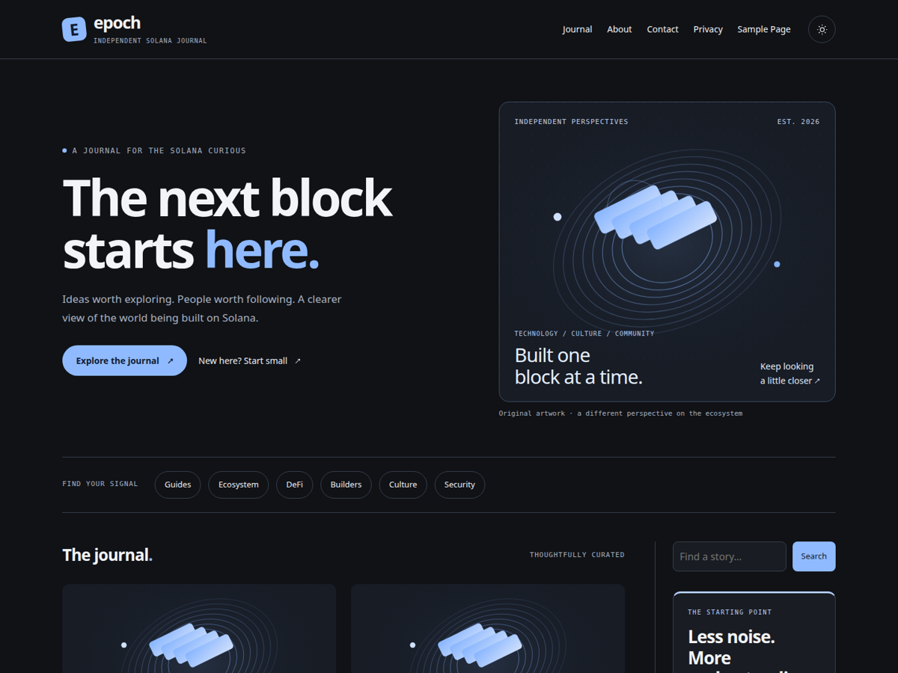
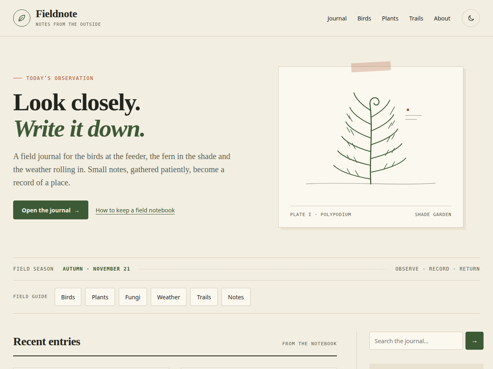
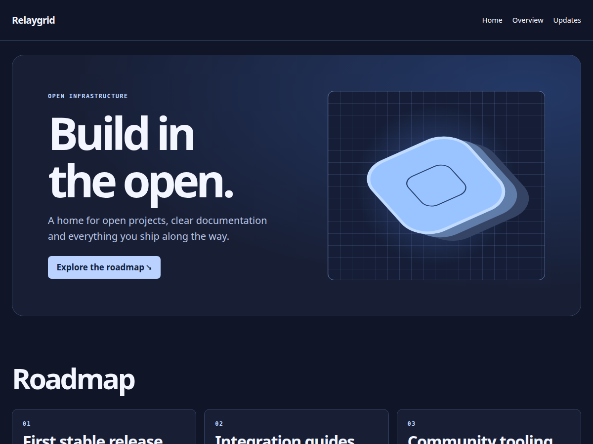
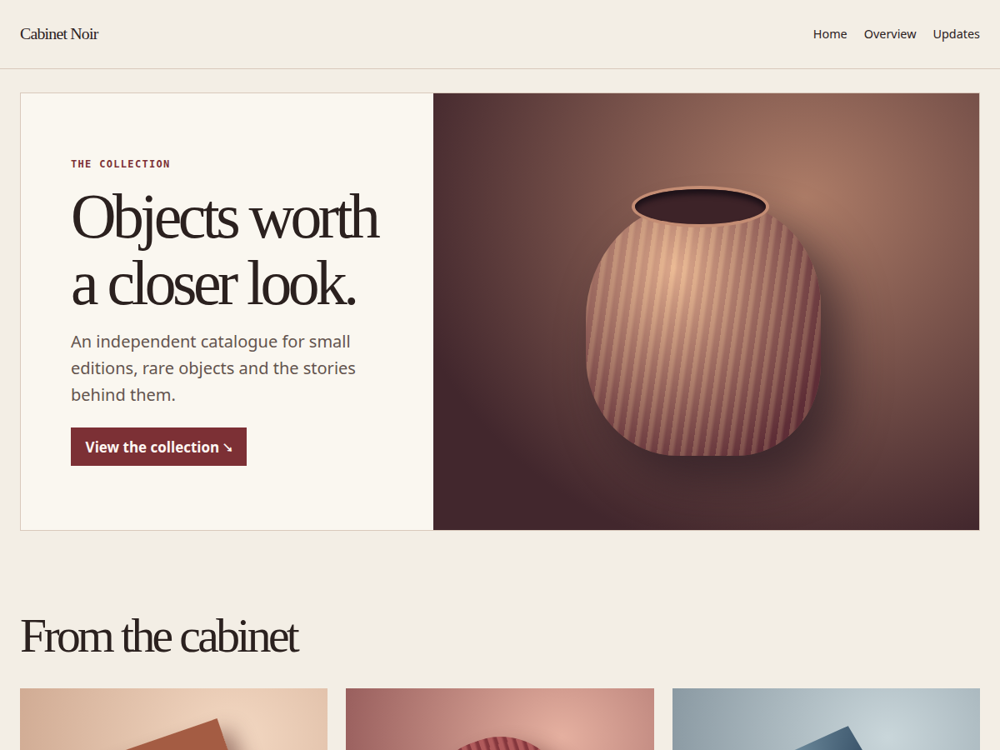
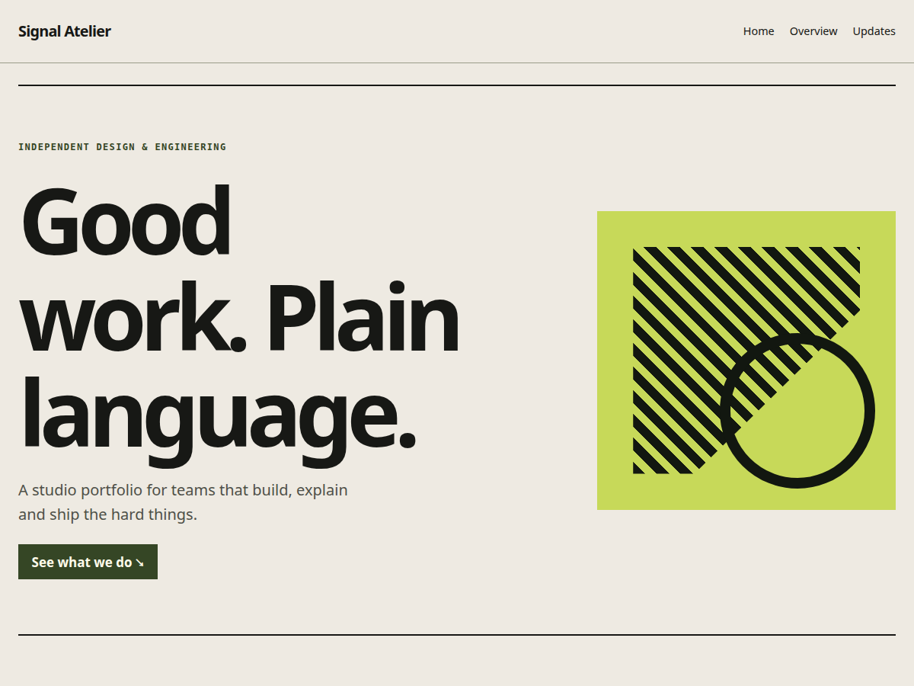
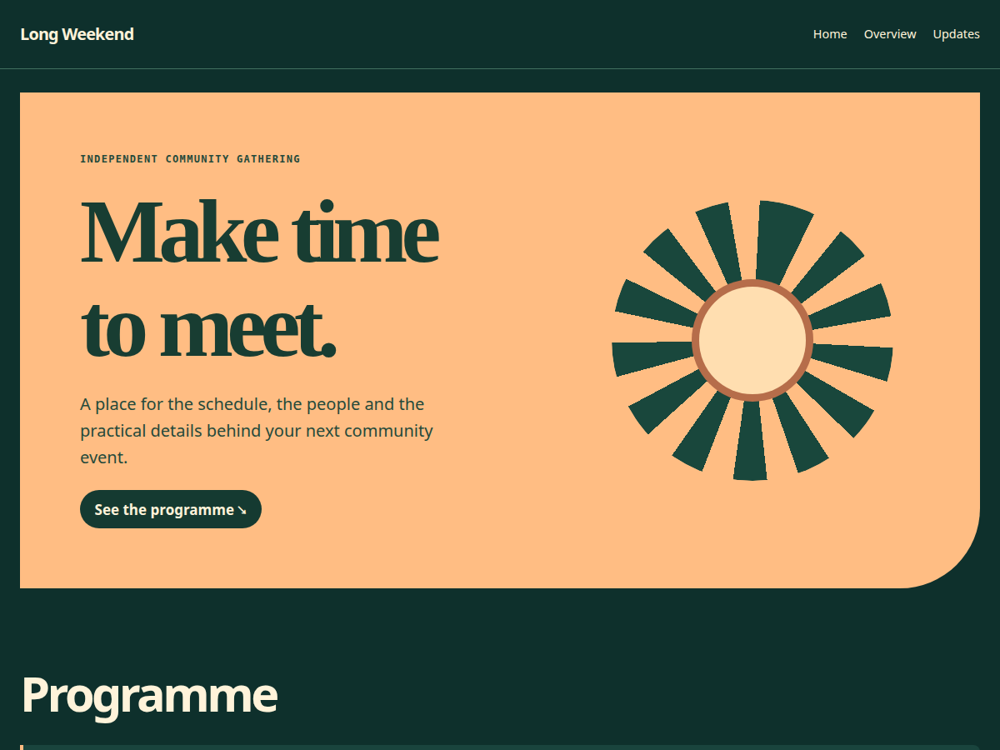

THEME 01 / Solana editorial
Epoch
A charcoal-and-blue journal for Solana communities, with native publishing, responsive reading layouts and original artwork.
Source & installation guides ↗Free themes for the people writing, building and bringing communities together. Start with one you like. Make it your own.

A charcoal-and-blue journal for Solana communities, with native publishing, responsive reading layouts and original artwork.
Source & installation guides ↗
A paper-and-ink field journal for naturalists, gardeners and walkers: specimen-card entries, margin notes, a season strip and hand-drawn line artwork. Designed by Claude.
Source & installation guides ↗
A lightweight project homepage with technical updates, a roadmap and a compact documentation layout.
Source & installation guides ↗
A museum-style gallery with an oversized exhibit lead, a specimen grid and dedicated collection notes.
Source & installation guides ↗
A bold studio portfolio with an oversized opening, a structured service list and case-study templates.
Source & installation guides ↗
A lively event theme with a poster-style entrance, an editable agenda and room for speaker or venue updates.
Source & installation guides ↗Every theme includes an installable WordPress ZIP, source and setup guides. Cards marked Blogger also include Blogger XML. Previews use fictional sample content. WordPress needs hosting that supports custom themes; GitHub Pages hosts the static previews.